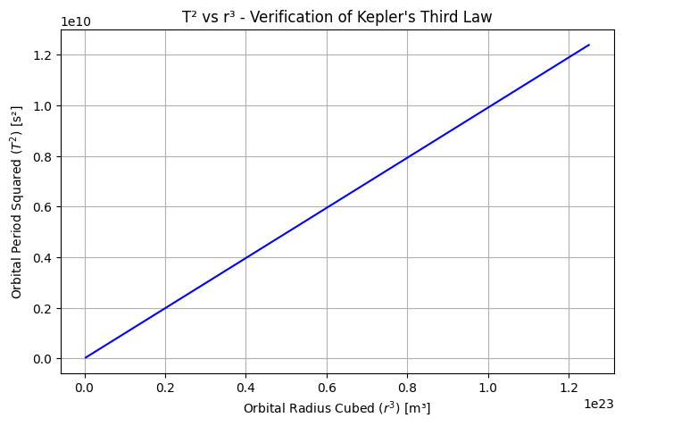
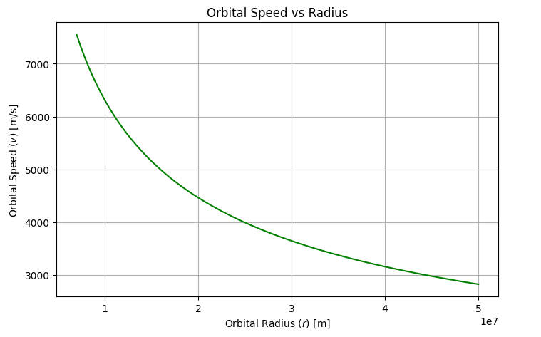
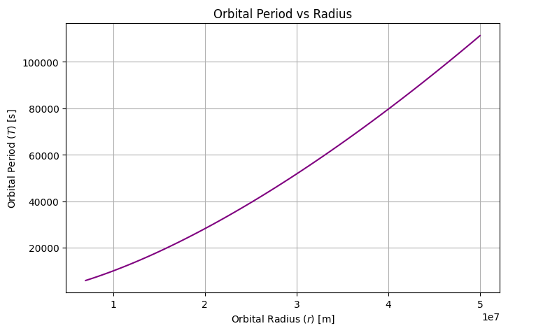
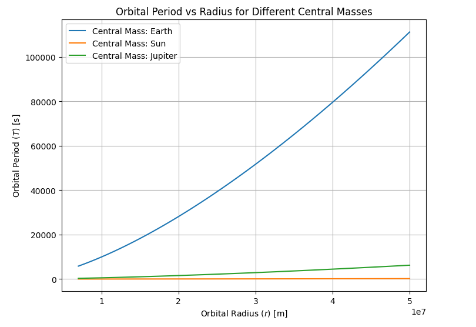
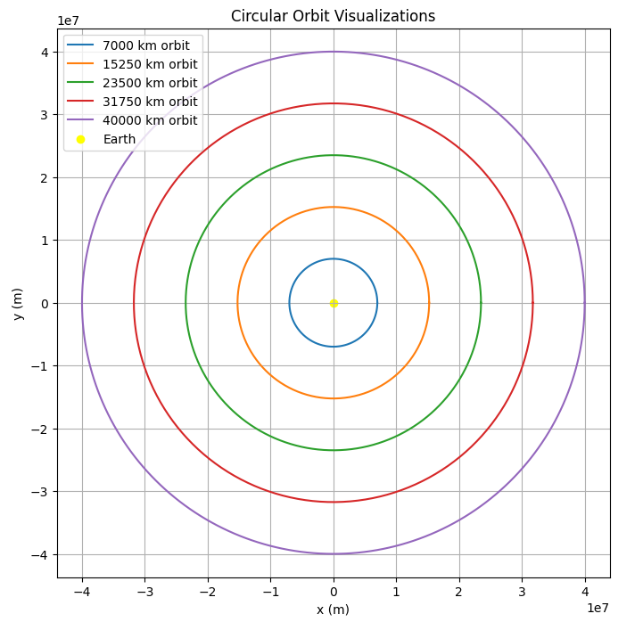

Gravity: Orbital Period and Orbital Radius
1. Introduction and Motivation
The relationship between the square of the orbital period (\(T^2\)) and the cube of the orbital radius (\(r^3\)) is a cornerstone of celestial mechanics.
This fundamental principle, known as Kepler’s Third Law, is crucial for:
- Understanding planetary motion,
- Designing satellite trajectories,
- Calculating masses of celestial bodies,
- Predicting exoplanet properties.
2. Theoretical Foundation
2.1 Gravitational Force
Newton's Law of Universal Gravitation states:
where: - \(G\) is the gravitational constant, - \(M\) is the mass of the central body, - \(m\) is the mass of the orbiting body, - \(r\) is the orbital radius.
2.2 Centripetal Force
For circular motion, the centripetal force required is:
where \(v\) is the orbital speed.
2.3 Orbital Speed
Setting gravitational force equal to centripetal force:
Simplifying:
Thus, the orbital speed:
2.4 Orbital Period
The orbital period \(T\) is the time for one full orbit:
Substituting \(v\):
Squaring both sides:
Thus:
3. Practical Applications in Astronomy
3.1 Determining Planetary Masses
Knowing \(T\) and \(r\) for a satellite, we can rearrange:
This is how Earth's mass was first estimated using the Moon!
3.2 Satellite Orbit Design
Engineers use \(T^2 \propto r^3\) to calculate satellite orbits for:
- GPS systems,
- Communication satellites,
- Weather monitoring.
3.3 Exoplanet Discovery
Detecting periodic star wobble allows astronomers to:
- Estimate \(r\) and \(T\),
- Infer exoplanet mass,
- Predict habitable zones.
4. Computational Modeling
Let's simulate and visualize these relationships!
4.1 Simulating \(T^2\) vs \(r^3\)
import numpy as np
import matplotlib.pyplot as plt
G = 6.67430e-11 # m^3 kg^-1 s^-2
M = 5.972e24 # Earth's mass (kg)
def orbital_period(r):
return 2 * np.pi * np.sqrt(r**3 / (G * M))
radii = np.linspace(7e6, 5e7, 100)
periods = orbital_period(radii)
plt.figure(figsize=(8, 5))
plt.plot(radii**3, periods**2, color='blue')
plt.xlabel("Orbital Radius Cubed ($r^3$) [m³]")
plt.ylabel("Orbital Period Squared ($T^2$) [s²]")
plt.title("T² vs r³ - Verification of Kepler's Third Law")
plt.grid()
plt.show()

Graph 1: T² vs r³
- Linear relationship proves Kepler's Third Law.
- Larger radii mean significantly longer periods.
4.2 Orbital Speed vs Radius
speeds = np.sqrt(G * M / radii)
plt.figure(figsize=(8, 5))
plt.plot(radii, speeds, color='green')
plt.xlabel("Orbital Radius ($r$) [m]")
plt.ylabel("Orbital Speed ($v$) [m/s]")
plt.title("Orbital Speed vs Radius")
plt.grid()
plt.show()

Graph 2: Orbital Speed vs Radius
- As \(r\) increases, \(v\) decreases.
- Distant orbits move slower!
4.3 Orbital Period vs Radius
plt.figure(figsize=(8,5))
plt.plot(radii, periods, color='purple')
plt.xlabel("Orbital Radius ($r$) [m]")
plt.ylabel("Orbital Period ($T$) [s]")
plt.title("Orbital Period vs Radius")
plt.grid()
plt.show()

Graph 3: Orbital Period vs Radius
- \(T\) grows faster than \(r\).
- Distant satellites have longer periods.
4.4 Different Central Masses
masses = [5.972e24, 1.989e30, 1.898e27]
labels = ['Earth', 'Sun', 'Jupiter']
plt.figure(figsize=(8,6))
for M_val, label in zip(masses, labels):
T = 2 * np.pi * np.sqrt(radii**3 / (G * M_val))
plt.plot(radii, T, label=f'Central Mass: {label}')
plt.xlabel("Orbital Radius ($r$) [m]")
plt.ylabel("Orbital Period ($T$) [s]")
plt.title("Orbital Period vs Radius for Different Central Masses")
plt.legend()
plt.grid()
plt.show()

Graph 4: Period for Different Central Masses
- Larger \(M\) leads to shorter \(T\) at same \(r\).
- Sun’s gravity dominates compared to Earth.
4.5 Circular Orbit Visualization
theta = np.linspace(0, 2*np.pi, 500)
plt.figure(figsize=(8,8))
for r in np.linspace(7e6, 4e7, 5):
x = r * np.cos(theta)
y = r * np.sin(theta)
plt.plot(x, y, label=f'{r/1000:.0f} km orbit')
plt.scatter(0, 0, color='yellow', label='Earth')
plt.xlabel("x (m)")
plt.ylabel("y (m)")
plt.title("Circular Orbit Visualizations")
plt.axis('equal')
plt.grid()
plt.legend()
plt.show()

Graph 5: Circular Orbits
- Orbit size increases with radius.
- Earth is at the center!
5. Extension to Elliptical Orbits
In elliptical orbits, replace \(r\) with semi-major axis \(a\):
Where:
- \(a\) is the semi-major axis,
- \(T\) remains proportional to \(a^{3/2}\).
6. Frequently Asked Questions (FAQ)
Q1: Why is \(T^2 \propto r^3\) important?
It allows astronomers to estimate masses and distances precisely.
Q2: What if the orbit is elliptical?
Replace \(r\) with \(a\) (semi-major axis); \(T^2 \propto a^3\) still holds.
Q3: Does mass of orbiting body matter?
No, the orbiting mass \(m\) cancels out.
Q4: How does gravity strength affect period?
Stronger gravity (larger \(M\)) shortens the orbital period.
Q5: What happens for interstellar objects?
In complex multi-body systems, corrections to Kepler’s Law are needed.